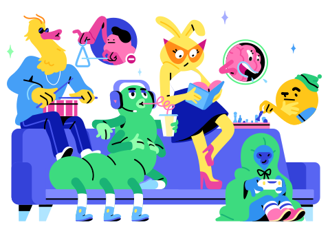

ОРГАНИЗУЙТЕ ПРОСТРАНСТВО, ГДЕ НАЙДЁТСЯ МЕСТО КАЖДОМУ
Здесь общается ваг мир. Discord - это голосовой, текстовый и видеочат, который более ста миллионов людей используется для общения с друзьями и сообществом

История о нас
Цель Discord - дать возможность создать место, где им всегда рады. Мы хотим, что бы вы всегда могли пообщаться именно с теми,
кто вам дорог. Мы хотим, что бы вы построили настоящее отношения с друзьями и сообществами вне зависимости от того, где онм находяться -
в соседнем доме или на другом конце света. Оригинальность, надёжность, понятность и веселье - вот те ценности, которые объядиняет наших пользователей
с сотрудников Discord
Пролог
Discord был запущен для решения большой проблемы: как общаться с друзьями по всему миру, играя в онлайн-игры. Основатели Джейсон Цитрон и Стэн Вишневский с детства разделяли любовь к видеоиграм, дорожили дружбой и связями, возникшими во время игры в них. В то время все инструменты, созданные для этой работы, были медленными, ненадежными и сложными. Джейсон и Стэн знали, что могут создать лучший сервис, который поощряет общение, помогает формировать воспоминания и воссоздает чувство единения, которое достигается благодаря играм.


История
Итак, в 2015 году Стэн и Джейсон начали воплощать Discord в жизнь. Людям со всего мира это понравилось. Discord облегчил искреннее общение с друзьями, выходя за рамки обычных разговоров. Друзья поддерживали связь со своими различными сообществами. Discord упрощал участие в разговоре, переключаясь между текстом, голосом и видео для разговора. Технология была сложной, но цель была простой: сделать Discord привлекательным и удобным домом, в который можно было бы войти вместе со своими сообществами и друзьями. Через несколько лет Discord начал набирать обороты, и по всему миру появились преданные люди, которые любили наш продукт..